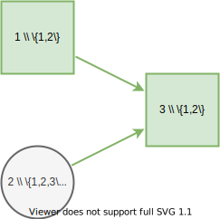

Usage
On this page, we demonstrate common patterns for expressing influence diagrams and creating decision models using DecisionProgramming.jl. We can import the package with the using keyword.
using DecisionProgrammingChance Nodes

Given the above influence diagram, we can create the ChanceNode and Probabilities structures for the node 3 as follows:
S = States([2, 3, 2])
j = 3
I_j = Node[1, 2]
X_j = zeros(S[I_j]..., S[j])
X_j[1, 1, :] = [0.1, 0.9]
X_j[1, 2, :] = [0.0, 1.0]
X_j[1, 3, :] = [0.3, 0.7]
X_j[2, 1, :] = [0.2, 0.8]
X_j[2, 2, :] = [0.4, 0.6]
X_j[2, 3, :] = [1.0, 0.0]
ChanceNode(j, I_j)
Probabilities(j, X_j)Decision Nodes

Given the above influence diagram, we can create the DecisionNode structure for the node 3 as follows:
S = States([2, 3, 2])
j = 3
I_j = Node[1, 2]
DecisionNode(j, I_j)Value Nodes

Given the above influence diagram, we can create ValueNode and Consequences structures for node 3 as follows:
S = States([2, 3])
j = 3
I_j = [1, 2]
Y_j = zeros(S[I_j]...)
Y_j[1, 1] = -1.3
Y_j[1, 2] = 2.5
Y_j[1, 3] = 0.1
Y_j[2, 1] = 0.0
Y_j[2, 2] = 3.2
Y_j[2, 3] = -2.7
ValueNode(j, I_j)
Consequences(j, Y_j)